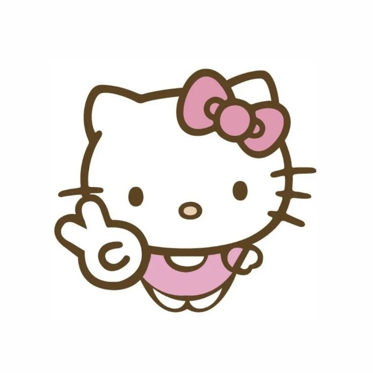

Hello Kitty, also known by her real name Kitty White, is a fictional character created by Yuko Shimizu, currently designed by Yuko Yamaguchi, and owned by the Japanese company Sanrio. Sanrio depicts Hello Kitty as a British anthropomorphized white cat with a red bow and no visible mouth.
